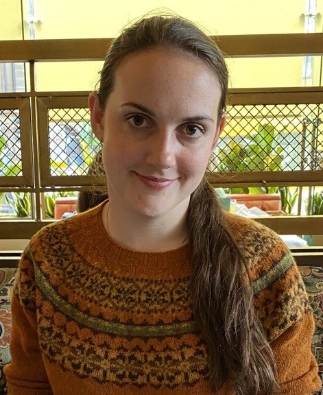

Meaning Language and Explainability (MLE) Lab
The Meaning, Language and Explainability Lab @ Edinburgh is focused on NLP research on meaning in language, with an emphasis on explainable approaches. One area of research within the lab involves studying specific types of meaning; currently these include generics and implicature. Another vein of research centers on examining meaning within specific contexts, including scientific documents, conversations, and historical news articles. The lab's research projects emphasizing explainability currently focus on specific NLP applications such as fact-checking.
News
- January 2026: 📣 Gus is giving a talk on "Expressing generics and stereotyping in language" at the Mind and Gender at Edinburgh (MAGE) group meeting.
- January 2026: Two papers submitted to ARR January 2026! 🌟
- January 2026: Xiaotang's paper on "Analyzing Instruction Optimization in LLM-based Pipelines for Tabular Fact Verification" accepted to EACL Findings 2026! 🎉
- January 2026: We now have a website!
Group Members

Emily Allaway
Group PI, Chancellor's Fellow